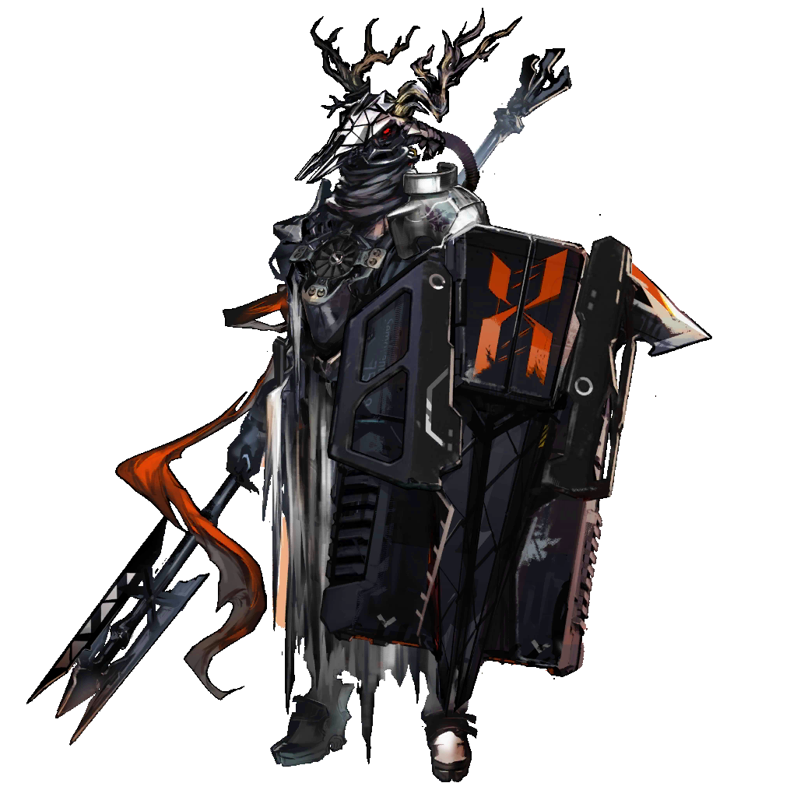
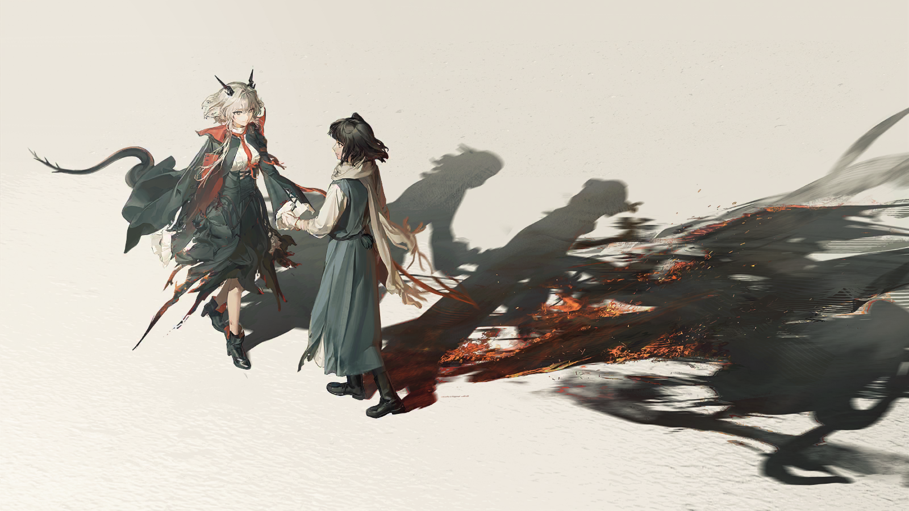
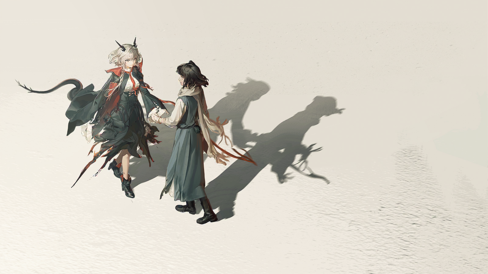
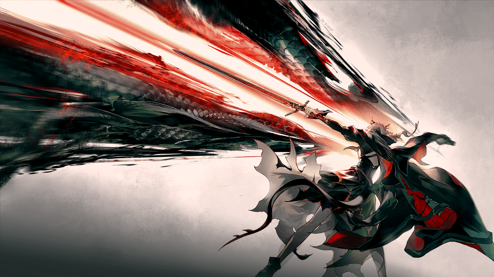
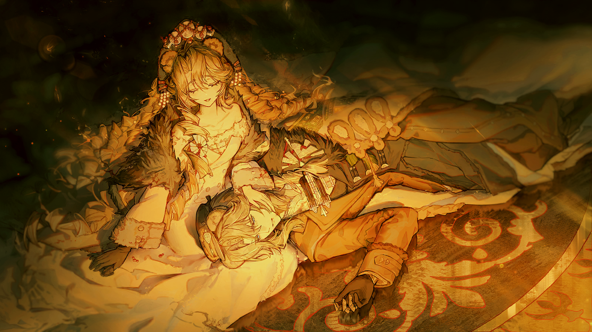
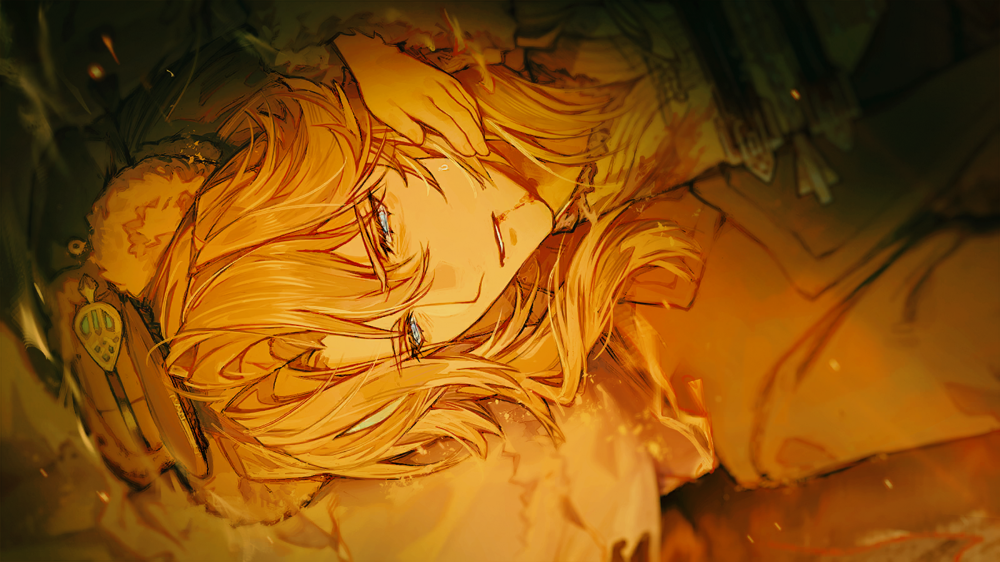
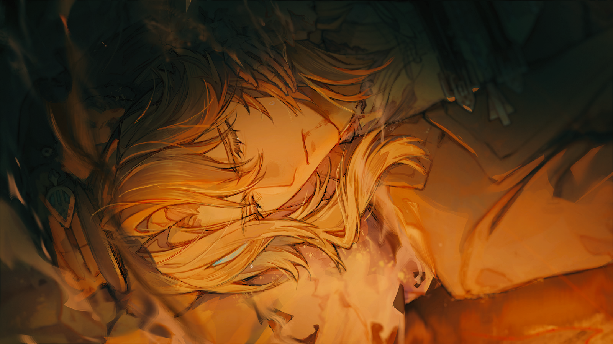
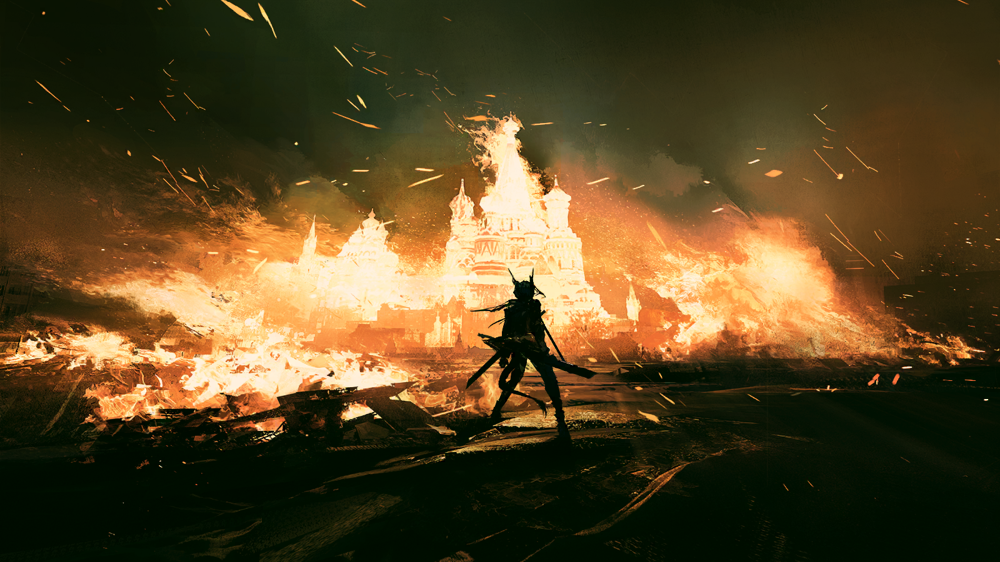
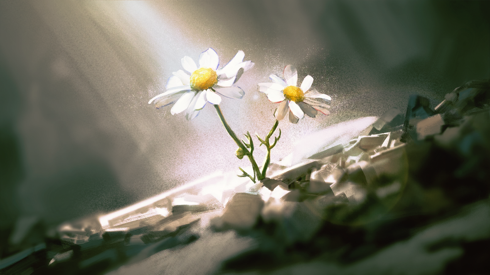
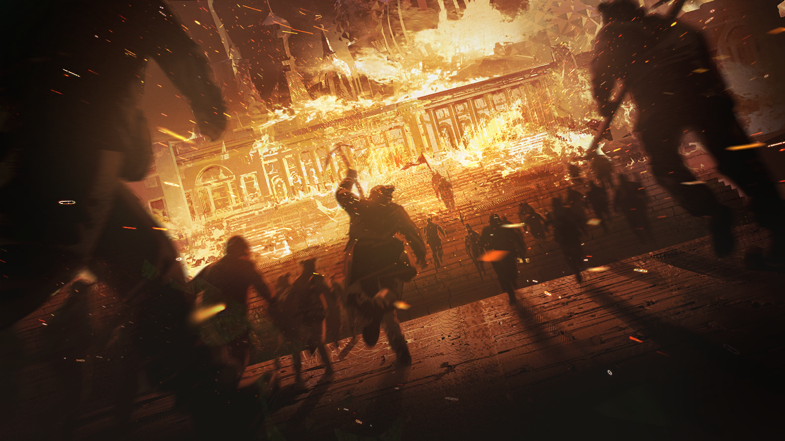

“不死的黑蛇”
啊……是了……
“不死的黑蛇”
令人怀念的力量，你还是如曾经一般强大。
“不死的黑蛇”
不愧是我最喜爱的继承人，看到种种经历将你打磨雕琢成现在的模样，我仍然感到欣喜。
“不死的黑蛇”
呵呵……哈哈哈哈哈哈……
塔露拉
闭嘴……
塔露拉
休想让我再一次屈服于你的法术，你那可耻的伎俩不会再骗到任何人了。
塔露拉
这里没有什么不死的神明，我只看到了一条苟延残喘的长虫。
塔露拉
米拉娜到底……在哪里——
“不死的黑蛇”
多么天真……你自以为跨越了曾经的失败，实际上却始终没能战胜你自身最大的弱点——你的优柔寡断，又何尝不是一种不愿做取舍的贪婪？
“不死的黑蛇”
如果你还信任你新结识的伙伴，你还愿意相信你那虚妄的理想……
“不死的黑蛇”
尽管继续看下去吧。

塔露拉
……你又想让我回到这里，你曾经打败过我的地方。
塔露拉
我不会逃避……可事到如今，你还是只能试图用我过去的失败羞辱我——这只会是徒劳。

老汉
抓我走。

老汉
老爷，抓我走吧！
老汉
你看我这身上！我才是那个得了病的！

塔露拉
爷爷……？

感染者纠察队
老头，你到底想做什么？
老汉
如果你们一定要抓够感染者去矿场的话，我还有力气干活，能算一个人头的。
老汉
村子里没有别的感染者了，抓我走吧！
？？？
让我跟他们走吧。

塔露拉
啊……

正直的青年
对不起，爸爸，我犹豫了。可还是没法答应。
正直的青年
就算是您，用这种办法换我活下去，我也是没法心安的。

正直的青年
我还是坚定地相信，这个国家对感染者的态度是不公正的。我们被迫屈服于他们的暴力，但我们不会向这种错误低头。
正直的青年
没有任何人的生命，本就该成为另一个人的代价。不要再说用谁的命去换谁的……

正直的青年
我走了之后，您和妈妈，还有村子里的其他人，都可以堂堂正正地活下去。
正直的青年
堂堂正正地活着，就是告诉他们这种人——他们错了。
塔露拉
…………

霍里
我愿意……分担你们的痛苦……
霍里
一场净化……一场拯救……

雷尔金
霍里……？你到底做了什么？！
受
难
者

塔露拉
不……
塔露拉
不该是这样……

塔露拉
米拉娜……？
塔露拉
米拉娜，不，等等！
在一片片浮光掠影的往日回忆中，同伴模糊的身影从塔露拉的身边走过。
塔露拉无法抓住同伴的手，只能目送她，不停地向更远的黑暗深处走去。
……米拉娜！

米拉娜
不……不，别打了，求求你们，别打了！
米拉娜
对不起、对不起，都是我的错——求求你们放过他吧！再这样下去他会死的！
图林
……你没有……
图林
咳呃——
米拉娜
图林、图林——
图林
米拉娜，你没有做错，任何事。

工头
给我用力打！两个一起！
米拉娜
不，我请求您……宽恕他……
图林
不要求饶……
图林
不要。
图林
即使是……为了他人……
图林
（低声）也不要向，压迫者，屈服。
米拉娜
呜……呜——
图林
……
图林
其他人都，走了？
米拉娜
是的，应该是的……
图林
那我们，也该……下井了。
米拉娜
但你身上的伤——我背着你走吧，我背着你！
米拉娜
我的个子很小，就算我背着你走，也能钻进矿洞的！
图林
没关系，扶我一下吧。只要我还能站起来，我就还能走动。
米拉娜
靠在我肩上吧……你的血，还是你的汗水？它好烫……
米拉娜
你一定撑不过去的。图林，我们往回走吧——
图林
不。
图林
刚才没写完的，你的名字。我继续教你吧。
米拉娜
图林……
图林
瞧，你忘了点起你的矿灯。先把灯点起来吧，这样，你才能看到，我马上要写在石壁上的字。
米拉娜
你到底为什么一定要教我们识字？你继续这样做，他们总有一天会打死你的。
图林
你害怕死亡吗，米拉娜？
米拉娜
我怕。
图林
嗯，我也怕。
米拉娜
那你为什么……
图林
因为只是畏惧毫无用处。
图林
我们是感染者，可我们并非生来如此。即使生来如此，也不意味着就该永远被关在这里，像牲畜一样被拴在矿井之中。
米拉娜
你又要说那些话了。你总说，我们才是这片大地真正的主人，可怎样的主人会连自己的命都保不住？
图林
学会认字并不能直接改变这样的现状，米拉娜。但只有学会读懂被他们垄断的东西，知道自己为何受苦……
图林
这样的现状，才有一丝被改变的可能。
图林
来，把手给我。
米拉娜
你的手在流血。
图林
没关系。你只需要看着自己的手，和眼前的石壁。
图林
“米拉娜”。
米拉娜
……
图林
和我一起？
米拉娜
……“米拉娜”。
图林
再写一遍吧。
米拉娜
（啜泣）
图林
别哭，孩子。我的血不会在这里流干。更不用说，即使它在这里流干了，也绝不是为了实现那些高高在上的人的野心而流干的。
图林
它是为了让一个不识字的孩子知道自己的名字，而源源不断涌出的。
米拉娜
呜……呜啊……
图林
所以，别浪费。记住你自己吧。
米拉娜
“米拉娜”……这是我的名字。
图林
记住，拥有这个名字的人，她是这片大地真正的主人。
图林
这一个米拉娜，和千千万万个……
图林
“米拉娜”。
图林
抱歉，我们同行的路应该只能到这里了。

霜星
为什么？你加入我们还没有多久，这就要反悔了？
图林
不，请不要误会。游击队的战士，你们的抗争很伟大，我尊敬你们。
图林
只是我自己，还有未解决的困惑。
图林
我始终相信，去反抗谁，打败谁，从来都只是手段，而非目的。
图林
共同的敌人只能让人们暂时团结在一起，只有共同的愿景，同一种思想，才能为这片土地带来真正的和平。
图林
兄长被处死了，归根结底，不是因为他反对皇帝或军队，只是因为他的理想还不能为这个国家所认同。
图林
我想要继承他的遗志，我要找到一种可以让所有人认同，能带来希望的思想——所以，我不能只停留在乌萨斯。
图林
我的第一个目的地也许是卡西米尔，将来我还要去到更多地方，莱塔尼亚、东国、炎国……
图林
我需要知道，其他国家的人们是以什么样的方式聚集在一起，也许我能够从其中发现历史的共性。
图林
我想要为一个最基本的信条，找到更多可靠的论据……
图林
“我们要求平等，因为没有任何一个人理应拥有压迫另一个人的特权。”

霜星
你在谈论一些遥不可及的事，在我们还食不果腹的当下，在感染者和普通人都想互相杀了对方的时候。
图林
是的，很遥远。但许多时候，我们就是需要一些遥远的愿景为我们指引方向。
图林
感染者的归宿，绝不会是在这片天寒地冻的雪原上；每一个乌萨斯人的归宿，也不该是活在一个暗无天日的国度里。

霜星
……真是拿你这种人没有办法。
霜星
不过也对，比起和我们一起战斗，你确实有更多其他的事可做。
霜星
爸，也许我们可以送他走一段路？我担心他一个人，恐怕在雪原上走不出太远。

爱国者
游击队的人，都是战士。
爱国者
战士，不相信许诺，只牢记使命。
霜星
爸……？
爱国者
游击队，不会支持你的事业；我，祝福你的理想。
爱国者
图林。
爱国者
如果你也是以战士自居，那便该牢记战士的使命。
爱国者
勿忘初衷。
感染者纠察队A
确定就是他吗？

感染者纠察队B
和通缉令上的照片一模一样，应该错不了。
感染者纠察队B
死到临头还护着这些纸，有这么多，上面都写了什么？
感染者纠察队A
我也不识字，总之应该是些大逆不道的话。
感染者纠察队B
那我们拿这些东西怎么办？
感染者纠察队A
一把火烧了。
感染者纠察队A
回去复命，妄图颠覆乌萨斯的大罪人，伊凡·图林，已经伏诛。
青年在起火的屋子前久久伫立，放任越烧越旺的火焰包围着她。
塔露拉
米拉娜……已经够了。
塔露拉
不要被它影响你的心智，不要放任仇恨吞噬你。

塔露拉
我们都经历过惨痛的失去……可那些失败留给我们的不该只有无休止的恨。
塔露拉
你对我说过的，不要去恨，不要把仇恨当作我们向前的动力……
塔露拉
米拉娜——
不要打开那扇门。
米拉娜
……
青年沉默着，最终还是上前一步。
向燃烧的房子伸出了手。

塔露拉
作为一个感染者，我就是骄傲的。因为这片大地还没杀得了我。
塔露拉
顺带一提，我们要追求公平也不需要什么原因。因为我们本来就该追求公平。
塔露拉
如果这片大地不肯给，那我们就从它那拿回来。
阿丽娜
那你是真的很勇敢了。
塔露拉
你没在笑我吧。
阿丽娜
没有，怎么会。
塔露拉
嗯，那……我觉得，是所有肯和这个强加在我们身上的命运斗争下去的人，都很勇敢。
……

塔露拉
会不会到某一个时候，你已经不觉得命运值得我们抗争了。
塔露拉
这片大地上的一切都太烂了，我们已经什么都做不了了？
米拉娜
……不，我不会。
米拉娜
我们不只是为了取得胜利而战。如果放弃了抗争，我们就会变成这片大地腐朽的一部分。

塔露拉
所以我们要一直战斗下去，直到我们的敌人，我们要对抗的理念，还有一切压迫着我们的腐朽的事物被烧成灰。
塔露拉
或者直到我们自己化为灰烬……
米拉娜
我们不会放下刀剑。

塔露拉
我们也不放下希望。
塔露拉
米拉娜……你都听到了。
米拉娜
是的……我听到了那条黑蛇对我说的一切蛊惑的话语。
米拉娜
我也听见了你的回答。

塔露拉
米拉娜……站在这里的，就是米拉娜，对吗？
乌萨斯青年拉起了白发德拉克的手。

米拉娜
我……没事。
塔露拉
……欸？
米拉娜
只是黑蛇自己以为……它能够操纵我。
米拉娜
我只是受了伤，被它的人拖到了里面的房间。
米拉娜
我和它，和那个意志，周旋到了现在……
米拉娜
如果它真的成功了，它肯定会顶着我的面孔与你交谈。
塔露拉
这……
塔露拉
难道是你的计划？从什么时候开始……
米拉娜
你和我讲述你的故事，讲到黑蛇的时候，我就有了一些想法。
米拉娜
当然，进城之后发生的事，多少超出了我的预料。我也没有想到，黑蛇竟然会来救我。
米拉娜
我第一眼就认出了它，我见过那种眼神……在卡德尔那里。
米拉娜
于是我没有反抗。我想，既然它渴望一个完美的容器……不如让它觉得，自己找到了。
米拉娜
我不能真的让它进来，但也不能让它发现进不来。
米拉娜
于是我给它看有关伊凡·图林的记忆，一道我的内心真实的伤痕，让它以为它在里面，它甚至召回了所有分身。
米拉娜
它想彻底突破我的意志，也想利用我来胁迫你。
米拉娜
但它做不到。
塔露拉
也就是说，我们有可能……
米拉娜
彻底杀死它。
米拉娜
我会逼迫那些影子离开我的意识，在它们探出头的瞬间，你去点燃它们。
米拉娜
在那之后，我们还要抓紧回到城里，凝聚所有相信我们的人，为这场抗争带去方向。
米拉娜
开始吧，塔露拉。我已经迫不及待，见证它的消亡了。
塔露拉
不过，我从未做过这种事，米拉娜。
塔露拉
要烧掉它，我需要让我的火，笼罩在离你最近的地方……可能会很痛。
米拉娜
没关系。
米拉娜
不会有什么，比我们经历的那些更痛了。
灼热的空气，几乎让人无法呼吸。
黑发的青年皱了皱眉，很快又舒展开。她朝塔露拉笑了一下，露出能让她的朋友安心的笑容。
在她的身后，零散的蛇影，正在扭成一团，它发出可怖又凄凉的尖啸。

米拉娜
怎么样，塔露拉？我从来没有屈服过。
塔露拉
……你是我见过，意志最强大的人。你让我想起了……我的许多朋友。
米拉娜
是你反复对我讲过的那些故事里，从来没有提过名字的朋友？
塔露拉
也许这片大地上还有无数和他们有着一样品格的人。
米拉娜
支撑着我走到现在的，不只是意志。
米拉娜
还有……你们。
塔露拉
……
米拉娜
黑蛇以为，我像它一样，要依靠煽动仇恨的力量，才能去推翻这个腐朽的帝国。
米拉娜
但它最终都无法相信……
米拉娜
推翻帝国的只有帝国自己，我们是在它即将倒塌之前，不愿被埋葬的人。
米拉娜
黑蛇也和帝国一样，不过是一道陈腐的阴影，一段早该结束的历史。
米拉娜
所谓仇恨的“本质”，只是两代帝国，用千百年来的压迫，在我们身上培养出的习惯。
米拉娜
而我看到的，是一片剥除了压迫的沃土。
米拉娜
我们会用它，种出一片新的乌萨斯……一片新的大地。

这也许是迟来的一剑。
塔露拉忍不住去想……如果是在五年前，甚至是更早的时候，自己能挥出这一剑，是不是可以挽回无数悲剧？
如果自己不曾软弱，又能否为如今的火焰积蓄足够的力量？
已经来不及追问了……
那古老的恶神，在携着火焰的剑锋下灰飞烟灭。
塔露拉
你看到了，“不死的黑蛇”，我们识破了你最后的伎俩。
塔露拉
米拉娜不会屈服，像她这样的乌萨斯人，也不会屈服。
塔露拉
所以，是乌萨斯杀死了你——
塔露拉
因为她再也不会需要你。
塔露拉
我从不否认我会恨，每个人都会。
塔露拉
但恨，从来决定不了人们是谁，更不是谁必须走向的终点。
塔露拉
而你，只属于上一个时代的，僵死的行尸。
塔露拉
我的耻辱，我的心魔……
塔露拉
……再见了。

费奥多尔
……不能……咳、咳咳！

费奥多尔
我不能……让你离开这里，去举行，那场“布道”。
费奥多尔
不能让更多人看见你、听见你……不能让这因父辈的过错而招致的灾难，继续蔓延了。

费奥多尔
姐姐……
晃动的红与白中，圣愚的身影若隐若现。
费奥多尔感觉到胸口剧烈的疼痛。也许是因为矿石病的突然发作，也许是别的原因。
可他不能就这样倒下，因此只能继续用力，握紧了手中的弓箭。

纳斯塔霞
为什么？你不仅不愿与我站在一起，还不愿让我去结束这遍布整片大地的苦痛？
纳斯塔霞
甚至，这不仅是一场布道，这也是一场拯救。

纳斯塔霞
因为在它之后，这伟大国度之中的所有人都会停下彼此戕害的双手，放弃相互猜忌的斗争。
纳斯塔霞
他们会回到乌萨斯母亲的怀抱，为她团结，为她忍耐，为她向共同的敌人举起武器，彼此之间亲密得再无嫌隙——

纳斯塔霞
可你，却不愿让我这样做吗？

费奥多尔
……
他带去的箭矢已经尽数射空，那些坚硬而昂贵的武器无一不是径直穿过眼前那具孱弱的身体，仿佛目标并不存在一般……
或许，实际上也的确如此。

费奥多尔
（低声）圣愚……
费奥多尔
……所以，你知道圣愚……

Mantra
我曾被你们当作制作圣愚的“素材”追捕。
费奥多尔
……抱歉，为这些荒谬的事情。
Mantra
那时候你甚至都还没有出生。

费奥多尔
这是此地由来已久的残酷，作为在某种程度上延续了这“传统”的一环，我并不因曾经的不在场就能得到豁免。
Mantra
你理解错了。我这句话只是对过去事实的陈述，作为一个我能向你提供建议的佐证。

费奥多尔
什么建议？
Mantra
现存的绝大多数武器都无法对邪魔造成伤害，你知道，对吗？
费奥多尔
如果你是想劝说我，不要去做无用功……那么就请回吧。这件事只有我能做到。
费奥多尔
也许你并不清楚，在所有被加诸其身的身份之外，那所谓的“圣愚”，毕竟曾是——

Mantra
可也正因如此，你心中仍然有所犹豫。
Mantra
我能感觉到那些思绪波动的形状，它们告诉我，你在畏惧，或是怀疑。
费奥多尔
……
Mantra
但至少有一点你是对的。在这里，能直面它的，只有你。

Mantra
听着，年轻的皇帝。
Mantra
关于“圣愚”，你必须知道……
“……如何抓住一片雾、一阵风、一场雪？所有常规的办法都只是徒劳。”
“因而，只有放弃将其作为‘实在’去对抗，破除把它带到此世、使它锚定的关键，才能将其驱散。”
“而这个关键，并不由它如今的身份，或是任何奇异的术法维持，而只由一种执念所系。”
费奥多尔
执念……
费奥多尔
……谁的……
费奥多尔
执念？
费奥多尔
“只有我”……呵——多么狂妄……
费奥多尔
嘶……咳咳、咳……
费奥多尔
呃——
费奥多尔
姐姐……

女仆
陛下，您说什么？
费奥多尔
我的姐姐，她去哪儿了？
女仆
您怎么会有姐姐呢？您是乌萨斯皇室唯一的继承人，乌萨斯唯一的太阳——
费奥多尔
……她不在这里。可她说过，她不会先一步离开我。
女仆
陛下？
费奥多尔
她说过。
费奥多尔
她说过的！
？？？
陛下……

？？？
陛下——

？？？
陛下。

费奥多尔
……
费奥多尔
……谁说过……
费奥多尔
什么？
费奥多尔
不……

纳斯塔霞
哦，你累了，亲爱的费佳。
纳斯塔霞
尝试杀死我的举动，再加上难以忍耐的病痛……已经耗尽了你的力气。

纳斯塔霞
不必再勉强自己，睡吧，睡吧。等你醒来，一切都会好起来。
纳斯塔霞
苹果树会开花，结出果实……

纳斯塔霞
在还有些寒冷的春天过后，就是温暖的夏天——

费奥多尔
纳斯塔霞，你为什么回来？
纳斯塔霞
我回应姑母的渴望。因为她的渴望，也正是所有乌萨斯人的渴望。
费奥多尔
……是啊，就像最初，你回应父亲的渴望，选择忍耐所有的痛苦那样。
费奥多尔
在达成他人的期待这点上，你一直都是我们当中，做得更好的那一个。
纳斯塔霞
可最后我逃走了。
纳斯塔霞
我让你独自背负重担走了一段漫长艰辛的路途，那是我最大的过错。现在，你可以将这重量还到我的肩上了。
费奥多尔
所以，这就是你想要的吗？成为圣愚，成为帝王，成为……除了“纳斯塔霞”之外的一切？
纳斯塔霞
这是我应当接受的。
费奥多尔
可我问的是……
费奥多尔
你“想要”的，究竟是什么？
纳斯塔霞
啊……
费奥多尔
姐姐。
纳斯塔霞
我想要你平安。
费奥多尔
可我已经在你眼前。
纳斯塔霞
我想要你幸福。
费奥多尔
那就……停止你的“拯救”。
纳斯塔霞
不，唯有这点，是不行的。
费奥多尔
……那你想拯救的，是这国度之中的所有人吗？就像你说的，“所有乌萨斯人”。
纳斯塔霞
是的，费佳。
费奥多尔
其中也包括我。
纳斯塔霞
当然。
费奥多尔
……可如果……
费奥多尔
如果这些人，其实并不想被你拯救呢？
费奥多尔
没有人是为了忍耐痛苦而出生的。所谓需要被“拯救”的前提，从一开始就不应存在——
纳斯塔霞
……
费奥多尔
而且，我也不想像这样被你拯救。
费奥多尔
我不愿成为你的负担，不要你独自背负一切——你的逃离从来不是错误，而是我的愿望。
费奥多尔
你只是，回应了我的愿望。
纳斯塔霞
你还是这样任性。
费奥多尔
可纳斯塔霞会答应我的。
费奥多尔
那个总是能在苹果林中找到我的纳斯塔霞，一定会答应我的。
纳斯塔霞
费佳。
费奥多尔
你答应过我。你逃走了，你拒绝了忍耐，拒绝了痛苦。而现在……
费奥多尔
再答应我一次吧，姐姐。
费奥多尔
我请求你……
没有回答。只有原本抚在费奥多尔颊边那只纤长冰冷的手，陡然变得温暖。

接着，那只手又很快变得窄小、变得柔软……
变成一只费奥多尔曾牵起过的，属于某个孩子的手。
孩子的声音
……苹果树呀，苹果树♪
孩子的声音
请告诉我♪
孩子的声音
春天将在何时到来？♪
孩子的声音
在那僻静的小路上♪
孩子的声音
拾起坠落的花朵来♪
孩子的声音
美好的时光啊♪
孩子的声音
总是会被遗忘♪
孩子的声音
哼♪哼哼哼♪哼哼♪……哼哼——
费奥多尔
……

模糊的声音
拯救……
模糊的声音
结束……■■……痛苦？
费奥多尔
……我会的。我一定会的，纳斯塔霞。
费奥多尔
所以请你，先回到母亲的身边吧。然后，等着我……
费奥多尔
等我行完应行的路，再去找到你。
模糊的声音
■■……
模糊的声音
■■■■。
……姐姐，如果仅凭渴盼便足以使逝者复生，那你或许已有过一千次生命。可我知道，这仅是亵渎与无休止的折磨。
唯一值得庆幸的是，你在最初离开时并不孤单——因为母亲已经在那，因为我的一部分也已经随你而去。
并且，它永不复返。
费奥多尔
……姐姐。
费奥多尔
能想起你，我很高兴。
夕阳西沉，最后一束日光也从室内消逝。
倒在地上的人没有立刻起身，而是颤抖着将自己蜷缩、再蜷缩起来，仿佛是试图留下脸侧那曾短暂留存的温度……
也似乎是想极力缩小自己的存在，以回到那个世上只有他与血亲曾紧密相连的地方。
无论如何，他都没有发出任何声音。乌萨斯的皇帝只是安静地、近乎狼狈地倒在那里，直到画像厅陷入完全的黑暗。
而后，他最终还是缓慢而决绝地站起身来，找回了自己的武器。
费奥多尔
……
等费奥多尔来到皇座所在的位置时，大火已经席卷了大半个厅堂。
也许第一集团军已经攻占了琥珀宫的每个重要位置，也许叶莉萨维塔宁愿烧掉这象征皇权的辉煌之所也不愿让给其他人……
无论原因如何，都已经不重要了。
费奥多尔走过燃烧的地毯，走过碎裂的乌萨斯弯刀，也走过煊赫华贵的皇座阶梯，一路来到厅堂的尽头。
他从架子上摘下那柄曾被身为皇帝的自己寸步不离地拿在手上，就像孩子抱着玩偶一般不舍得放开的权杖——
而后，转头将它扔进了烈火之中。
费奥多尔
再见……
费奥多尔
乌萨斯。

勇敢的工人
……近卫军女士，近卫军女士！
勇敢的工人
弹药箱已经彻底空了，敌人的军队还在前进。

阿洛伊泽
……看来只能先放弃这个街垒。你们先走，由我来掩护你们撤退。
勇敢的工人
女士，你愿意和同僚一起加入我们的阵地，已经是我们的幸运了，不能再让你为我们冒险。

阿洛伊泽
相信我，我有十足的把握——
她正想说出宽慰的话语，一股温暖的疾风便拂过了她的脸颊，徐徐吹散街上的浓烟。
向街垒推进的精锐步兵们，突然大叫着倒下，火焰在他们头盔的上方熊熊燃烧。

阿洛伊泽
……那是？

勇敢的工人
看那个标志……整合运动！
勇敢的工人
是整合运动！！！
他看见了白发的德拉克，左手按着剑柄，空荡的袖管在烈风中起伏。
身旁的青年，手腕处裹着带血的麻布。两人相互扶持着，一步步向街垒走来。
而在她们的身后，是数不清的人们。
塔露拉
别担心，这里交给我。

勇敢的工人
您是……整合运动的领袖？
塔露拉
……不。是我身边这位。
塔露拉
他就是“伊凡·图林”。
阿洛伊泽
伊凡·图林？雅科夫·彼得洛夫的兄弟，《总罢工与帝国崩溃》的作者？
阿洛伊泽
人们都在说，你遭到第一集团军的背叛，又带着一些残兵逃了出去……不少工人都去找你了。
米拉娜
……是的。
米拉娜
伊凡·图林——我带着所有人回来了。
勇敢的工人
图林！图林！
米拉娜
各位同胞、朋友——
米拉娜
帝国又一次背叛了我，就像他们曾经无数次背叛你们一样。
米拉娜
但是现在，集团军的阴谋都已被粉碎，我和同伴们共同跨过了最艰难的夜晚。
米拉娜
看看我的身后。被迫害的感染者站在那里，受歧视的少数族裔站在那里，支持我们的军队也站在那里。
米拉娜
再看看你们的前方，第一集团军被我们打得节节败退，他们的炮火看似凶猛，却在人们的怒火前，如同蝼蚁。
米拉娜
我的同胞们，请拿起你们手边一切能够拿起的东西。拿起扳手、铁镐，拿起弩箭、铳炮。
米拉娜
在这里，都能望见琥珀宫的火光，那是女大公和皇女亲手为自己造就的末日。

米拉娜
而我们，会让那些高高在上的人听见——乌萨斯真正的主人，第一次敲响他们的丧钟！
塔露拉
乌拉——
她单手拔剑，火光自剑锋冲天而起，几乎快要点亮这条晦暗的街道。

勇敢的工人
乌拉——
众人
乌拉——

安托沙
……你果然在这里。

罗季昂
……几日不见了，工会主席。
一间隐蔽的办公室里，罗季昂拿着一个酒杯，另一只手正在向炉火投掷着碎纸。

奥尔佳
和我想得一样，第三局——特辖局的人，每到自己的绝境，第一反应都是处理文件。
罗季昂
还是那么敏锐，公爵大人。

罗季昂
或者，我很快就不能这么称呼你了。

奥尔佳
无论乌萨斯变成什么样子，你都看不见了，罗季昂！

罗季昂
……未必。
他抿了一口红酒。

罗季昂
我的眼前总能浮现出想象中的场景，正如现在，我在想象着你们的未来。

安托沙
你能想象到的事，都不可能发生，败类。

罗季昂
是吗……不妨来打个赌吧，比如说这间屋子——
罗季昂
昨天它叫第三局，今天它叫特辖局……明天，你们会给它起一个新的名字。
罗季昂
等你们自己坐进那把椅子里，再去看看，和我坐的时候，有什么不一样。
安托沙
如果你以为，我们中还有比你更卑劣的人，恐怕还是对自己太过自信了。
罗季昂
卑劣？我做的每一件事，都是秩序要求的事。你称之为罪，我称之为职责，我们不需要在这一点上达成共识。
奥尔佳
为了这种秩序，你又杀害了多少无辜的人？它还配被称为“秩序”吗？
罗季昂
那就再等一等吧。也许有一天，你也会对着新的“秩序”，说出同样的话。
安托沙
说完了吗？
罗季昂
说完了。
罗季昂
你的回答呢？
弩箭击碎了玻璃杯，钉进他的心脏。
余下的残酒泼洒在他的领口，终结过无数生命的手掌，自然地垂了下来。
安托沙
肮脏。
他用桌布擦了擦手心，抱起一旁的资料。

安托沙
里面的档案，一张都不许动，清点完移交。

奥尔佳
可移交给谁呢？

安托沙
……交给新的乌萨斯。

副官
报告总司令，我们还能调度的军舰都已经驶出战场范围。

叶甫根尼
斯韦特兰纳回信了吗？
副官
这——

叶甫根尼
那就是没有了。
副官
也许是还没有送到，中央区的通信环境并不理想，战线也拉得很长。整体情况不算明朗，耗时无法控制。

叶甫根尼
……

叶甫根尼
该死……
副官
总司令，请指示下一步行动。
叶甫根尼
……“下一步”？
叶甫根尼
你问我，“下一步”？
男人的愤怒突如其来。他抓起手边最近的东西，狠狠砸向身侧的副官，甚至都没看那是什么。
打开的墨水瓶溅了对方一身，被砸到的人立刻跪了下去。
副官
抱、抱歉，总司令阁下，可我们不能一直保持航行状态！
副官
我们已经加速后撤了三百多公里，燃料、食物等资源损失不计其数——
叶甫根尼
这些情况，我难道都不知道吗？！
叶甫根尼
损失！损失！除了这些东西，你们还会说什么？难道我的队伍里已经没有士兵，只有天杀的军需员和会计吗？
副官
不，长官，我只是想说，也许我们得停下来休整一下了……
叶甫根尼
要不要我这个元帅，也给你来当？
副官
长官，我——
叶甫根尼
滚下去！

叶甫根尼
停下……停在哪里？停在这些没有人烟的矿区里，还是停在泥泞难走的苔原上？
叶甫根尼
况且，战争还没有结束……
叶甫根尼
我的第四集团军还没有输——
？？？
“夜雪无痕，噤声。”
“Hoчной снег без следа, молчи.”

叶甫根尼
——呃——

西尔卡
别急，我亲爱的“兄弟”。
叶甫根尼
是你——

西尔卡
看来，你记得我的声音？
西尔卡
我在你手下第六师团的前锋营待了半年。半年后，我主动申请转去了特殊战术兵团“谢钦”。我们从未正式打过照面。

西尔卡
你记得我，是记得一个感染者逃兵，还是记得一个不服管教的自由民？
叶甫根尼
什么感染者，什么自由民——只有恶心的杂种这个身份才最适合你！
叶甫根尼
如果你不在这里杀了我，那我一定会追杀你到这片大地最深的角落——
西尔卡
别急，我会的。
西尔卡
你杀死了自己的父亲，又杀死了他的情人。从那之后，你一直在找那个私生女的踪迹，却不知道，她几乎就待在你自己的眼皮底下。

西尔卡
不过，这都不重要了。你掀起的动乱、制造的屠杀太多，我远不算是你在这片大地上最亏欠的人。
西尔卡
而且我听说，不久前你还曾经逼着整个“谢钦”，为一个毫无意义的目的去送死……

西尔卡
所以，来吧，在那些疲倦的士兵反应过来，或者我将你了结之前，让我们盘算清楚你欠下的那些血债。

雅罗米尔
……这些整合运动只是残兵，他们的主力已经跟随大部队北上，留下的不过是老弱病残，还有刚加入的农民。
雅罗米尔
他们手中也许连武器都全是生锈的农具，我们只需要按照原计划对他们进行围剿即可。
犹豫的步兵
可我们前几次行动并没有取得预期中的进展，您想要留下活口，这增加了任务的难度——

严肃的步兵
队长，前线来报！
严肃的步兵
卡西米尔动员的征战骑士部队加快了行军速度，我们的防御工事太过陈旧，如果不增加兵力进行阻挡，半天之内他们就会越过边境了！

雅罗米尔
……
严肃的步兵
队长？

雅罗米尔
援军和补给呢？
严肃的步兵
中心驻地……维亚特诺拒绝支援，据称是因为元帅将多数兵力都投入了中央区的战斗，但这根本就只是借口！
犹豫的步兵
队长，我们应该响应中央区的支援请求的。

雅罗米尔
那谁又来守在这里，守住乌萨斯的边境线，守住居住在这附近的乌萨斯人？
严肃的步兵
如果我们走了，也只是因为元帅的命令，后果并不由我们承担。可您当时拒绝回复，以至于现在被切断了补给——

雅罗米尔
因为如今发生在中央区的，本就已经不是一场光荣的战争。
雅罗米尔
在这一点上，元帅的选择……出错了。
严肃的步兵
您是说，第一集团军不该选择和那群感染者一起进攻圣骏堡？

雅罗米尔
不，是我们不该先选择这样做，最后却又背叛他们。
雅罗米尔
这不是计谋，而是纯粹的可耻。背叛造成的后果，只是乌萨斯人继续屠杀乌萨斯人，乌萨斯人继续驱逐乌萨斯人。
雅罗米尔
既然已经将感染者当作战友，那就不该如此轻易地选择背叛。这不是乌萨斯的军人应当做的事。
雅罗米尔
现在我们能做的，就是用性命守住最后的防线，不让卡西米尔人向这里踏近一步。
犹豫的步兵
那整合运动——

通讯员
队长，营地外有人要求见您！

雅罗米尔
哪边的人？
通讯员
乌萨斯人！他们还穿着第一集团军的制服，但已经没有番号了！
雅罗米尔
……逃兵？难道是从泽尔格勒擅离职守的那些——

军官
雅罗米尔上尉，许久不见。
雅罗米尔
送上门来的逃兵，这年头真是什么事都有啊。
军官
我们只是在恰当的时候，做了恰当的选择。
军官
您那时不在泽尔格勒，上尉。您不知道那座伟大的城市为何陨落，那里又究竟发生了什么。
军官
而我认为知道这些，对您理解现状为何发展至此……至关重要。
雅罗米尔
你知道你自己在说什么吗？我没有当场把你格杀已经算是仁慈——
军官
我知道您有这样的权限，也有这样的能力，可这件事您必须知道。
军官
关于那位小将军，阿纳托利的真实死因。
雅罗米尔
……
军官
他不是替元帅挡下感染者的刺杀而死的。相反，刺杀元帅的，正是他本人。
雅罗米尔
……你说什么？
军官
据我所知，他死于刺杀失败之后的矿石病急性发作。
雅罗米尔
不可能。
军官
这是我们的人从维亚特诺带出来的消息。他在仓库里发现了阿纳托利的尸体，虽然元帅封锁了消息，可她无法杀死所有知道真相的人。
军官
如果您有心确认，这是很容易就能知道的事实。也许，您只是选择了去相信自己想看到的东西。
军官
可假使阿纳托利真如报纸所言，死得那样光荣和英勇，那他的遗体……又为什么会出现在无人看守的仓库中呢？

雅罗米尔
……所有人都告诉我，他是为了保护母亲——
军官
因为第一集团军需要一个光荣的、真正的小将军，而不是一个无人在意的、可悲的病人。

雅罗米尔
……
雅罗米尔下意识望向自己的手腕。
在护腕下看不到的地方，隐藏着新生的结晶。他突然无比清晰地感受到坚硬的矿石切开皮肉，生长出来。
……迟早会有这一天的，可他没想到这一天，竟来得这样快。
军官
仔细想想吧，上尉。我们带来了三百多人，剩下还有将近一千人在路上。
军官
卡西米尔不会分辨我们的阵营。既然中心驻地已经抛弃了我们，那我们就自己寻找盟友。
军官
而我听说，乌卡边境上的整合运动对卡西米尔人产生过比集团军更有效的威慑。如果您可以暂时放下成见，不再继续将整合运动都当作敌人……
军官
那就请考虑与他们合作吧。让我们一起把卡西米尔的进军，阻拦在乌萨斯的国土之外。
第一集团军参谋长
元帅！元帅！

斯韦特兰纳
不要慌张。汇报。
第一集团军参谋长
是。外围三处临时阵地均已失守，预备队无力补防，寻求的支援也没有动静……
第一集团军参谋长
雅罗米尔……雅罗米尔再一次拒绝命令，他背叛了我们！

斯韦特兰纳
……我听见了。
第一集团军参谋长
从这里往北侧走，绕过琥珀宫的外墙，那里还有一个出口，我们能够从那里出城。
第一集团军参谋长
试试吧，元帅，城里城外还有不少打散的士兵，等回到了旗舰——

斯韦特兰纳
莫尔恰诺夫……
她伸手，扯下参谋长身上的肩章。
第一集团军参谋长
……这是？
斯韦特兰纳
你带着警卫连，从那里撤退。
第一集团军参谋长
不，元帅！属下实在——
斯韦特兰纳
执行命令！
斯韦特兰纳
……你是第一集团军的军人，你知道应该怎么做。
斯韦特兰纳
去吧。
塔露拉
斯韦特兰纳。
斯韦特兰纳
……很好，德拉克，你没有带其他人来。
斯韦特兰纳
这场你我之间的复仇，我等很久了。
塔露拉
不。
塔露拉
我对你没有仇恨。

斯韦特兰纳
即使我杀了你那么多的部下？
塔露拉
……因此，你要接受审判。
塔露拉
米拉娜允许你活着走出这里，新的国家会用法庭来清算旧的账，不在今夜，也不用我的剑。

斯韦特兰纳
你们的法庭……？

斯韦特兰纳
你什么时候见过，乌萨斯的军人，站在他国的法庭之上？
塔露拉
我们是乌萨斯人。
斯韦特兰纳
我怎么从来都不知道呢，感染者叛徒。
塔露拉
所以……你失败了。
斯韦特兰纳
……
斯韦特兰纳
……这座城市，比我想象中的，更难放手。
她拔出了自己的佩刀。
这柄刀锐利而崭新，元帅久违地举到面前，看着它像镜子一样反射出身后的火光。
斯韦特兰纳
我不接受审判，德拉克……
斯韦特兰纳
让帝国的军人，再为你的战功添上一笔。
她一字一句地说完这些话，便提着军刀向前走去。
刀光在夜色中闪烁了数十次，直到金属的碎片落在了地上，发出清脆的声响。

陈
……琥珀宫？
温热的烟尘扑向了陈的双眸，她眨了眨眼。
屹立千年的殿堂，在她的眼前，正在一点点化为灰烬。
陈
整座宫殿都烧起来了……连雕塑都在往下掉。
陈
这样的火……是你吗？
陈
塔露拉……你就在里面，对不对？每次都把自己扔在最危险的境地……
陈
好不容易才把你从那条老蛇的手里抢回来，好不容易才让我弄明白你到底背了多少东西……
陈
二十多年前的龙门，我松开过一次手。
陈
这一次……你可别想走在我看不见的地方！

哭泣的孩子
妈妈！呜哇——妈妈……坚持住，我拉你出来——
被困的母亲
咳咳——别管我了！
被困的母亲
屋子马上就要塌了，博珍娜，快跑——
被困的母亲
欸？

陈
……没事了，还能站起来吗，有没有哪里受伤？

被困的母亲
我……还好，谢谢，谢谢您……
被困的母亲
您……您看上去，竟然是炎国人。

陈
至少这不妨碍我们现在互帮互助。

陈
如果可以的话，能不能告诉我，城里到底发生了什么事？
被困的母亲
他们……还有许多的市民、工人，甚至一些孩子们，都在城里和集团军打仗。
被困的母亲
我不知道具体的情况，总之，他们好像往琥珀宫去了。
陈
……多谢。
陈
这里很危险，赶快出城吧。
不再哭泣的孩子
大姐姐，你不和我们一起走吗？
陈
抱歉，跟紧你的妈妈，好吗？
陈
……我还有必须要去找到的人。
不再哭泣的孩子
大姐姐，别担心，我们的队伍一定会胜利的！
陈
是吗……那真是太好了。
不再哭泣的孩子
春天已经到了，不信你看——

陈顺着小女孩手指的方向看去，她在漫天的烟尘里，看到了一抹扎眼的白色。
在这个依然寒冷的夜晚，圣骏堡的城墙脚下，开出了一朵报春的花。
赶来的工人
这里的集团军……都撤退了……

失落的工人
……我们死了好多人。

赶来的工人
他们是为了伟大的事业牺牲的……
失落的工人
雷德老大……？
工人们四处张望，寻找着曾经挡在他们前方的身影。
在一片尸山血海中，年轻的战士还维持着站立的姿势，宛如一座岿然屹立的雕像。
伤痕累累的工人
雷德老大……
远处的火光照亮了半边天空，战士刀刃上的火渐渐熄灭。
乌萨斯的复仇者，完成了他最后的复仇。

愤怒的工人
图林，前面的壕沟都被填平了！等你下一个命令！
黑发的青年点点头，她站立在缴获的战车车顶，粗布大衣在风中作响。
身后的人跟上来，扛着铁锹和铁镐，举着长刀与重弩，带着燃烧瓶与旗帜……他们都来了。
人们的声音
下命令吧，图林！
成千上万双眼睛，带着纯粹的热忱，汇集在一个人的身上。
有人渴望着复仇，有人渴望着荣誉，有人渴望着改变自己的人生，有人渴望着开辟新的时代。
但是这里的每一个人，都准备好了迎接明天。
米拉娜
……
米拉娜
乌萨斯的人民们！
她高举右拳。
米拉娜
我们忍受了，这片大地所能给予的所有痛苦。
米拉娜
我们都见过，断了奶水在襁褓中死去的孩子，用尽最后的力气搓着双手取暖的老人。
米拉娜
我们也都是挨着老爷们的皮鞭长大的人，听见过他们无止尽的嘲弄和笑声。
米拉娜
曾经我们都不明白，这一切都为了什么。
米拉娜
但是今天，就在这个晚上！看到前面烧着的大人们的房子，我们知道了！
米拉娜
我们要在明天，让所有人都不再挨饿与受冻，因为我们会有一个新的国家！
米拉娜
属于农民，属于工人，属于每一个乌萨斯人的乌萨斯！
米拉娜
乌拉——
所有人
乌拉——乌拉——乌拉——！

那一天，人们看到了。
自远北苍茫的坚冰，到羽兽安眠的原野。
寒冷而漫长的黑夜，裂开了一道火红色的创口。
万众的怒吼，成为了花园中唯一的声音。
愤怒的人们，踩过了由他们亲手铺就的石板。
高高掷出的火炬，点燃了由他们从平地建起的殿堂。
一千年过去了，创造出了一切的人们，终于有资格决定自己造物的命运。
洁白的大理石制成的头颅，在草地上翻滚——伊戈尔最后的目光，永远地停留在了愤怒的背影上，停留在吞噬了琥珀宫的火焰上。
这里的人们，曾经恐惧过火焰。
因为它能烧平矿坑，倾翻锅炉，夺走他们的食物与肌肤，点燃他们所眷恋的故土。
如今，他们不再恐惧火焰。
沾满血污的冠冕在它的口中化为灰烬。它面对着那些活生生的人，照亮向前行进的面孔，照亮那些从来没有被看见过的面孔。
它是毁灭，也是新生，像是早春破开重阴的曙光，温柔而浩瀚地倾泻在整座广场。
骏鹰从杆上滑落，一面红旗换了上去。
工人们把旗帜抖开，在夜风中，它被吹得绷直。
今夜落下的雪花，都融成了水。
第一次，落在仰起的脸上。
门外的声音
乌拉——乌拉——

叶莉莎女大公
……
叶莉莎女大公
抱歉，安格利娅。
叶莉莎女大公
看来，我还是狠不下心，去完完全全地利用那个孩子，即使她只是有着与你相似的面庞。

叶莉莎女大公
可你又是多么残忍啊……如果在抛下我们之后，你愿意来我的梦里哪怕一次——
叶莉莎女大公
……
她对着室内的镜子，别好了自己的头饰，把衣服再次抚平。最后从怀里拿出一块怀表，放在了桌上。
镜子里的脸，她看着，看了很长一段时间。
她这一生学了很多东西，唯独有一样，帝国和宫廷都没有教过她。
乌萨斯工人
别动，你已经——
第一个冲进来的人愣了一下，对方平静地站在房间正中，面朝门口，双手抬起。
叶莉莎女大公
我明白。
阿洛伊泽
等等！
阿洛伊泽
叶莉萨维塔，陛下在哪里？
叶莉莎女大公
我怎么会知道呢？
叶莉莎女大公
不过，如果你问我，在我的设想里，我那可怜的侄子下场会如何，我倒是有一个回答……

阿洛伊泽
叶莉萨维塔——
叶莉莎女大公
那就是，死亡。
叶莉莎女大公
这对一个一无所有的人来说，是唯一的仁慈。
叶莉莎女大公
而至于我……
叶莉莎女大公
请为我带路吧，这位先生。

整合运动战士
塔露拉！你终于到了——
塔露拉
嗯，刚解决完第一集团军。
整合运动战士
这边也搞定了！抓了女大公，她的卫兵，还有第四集团军的残兵们都被我们收拾了！
整合运动战士
我们……我们胜利了，塔露拉！

塔露拉
……
整合运动战士
怎么了，塔露拉？
塔露拉
我只是，为大家高兴……
塔露拉只是下意识地回答，她注意到旁边的一条走廊上，还有一个人缓缓地向前走，火光拽动着他的影子。
她把左手搭在了剑柄上，朝那边迈了两步。
对方听到了这边的动静，他没有逃，只是回过头，注视着塔露拉。
他的眼神不是失败者的眼神，塔露拉能认得出来——那是一个人把紧握着的东西放下之后，得到安宁的眼神。
塔露拉
……
塔露拉微微颔首，对方也点头，轻轻回了一个礼。然后他转过身，向火海的深处走去。
浓烟吞没了他的身影，塔露拉再也没有看到他。
塔露拉
米拉娜……
米拉娜
我们胜利了……塔露拉……
人群正在从宫殿中走出，讨论着如何处理接下来繁重的事务。
二人待在一个角落，在火光下紧紧相拥。

米拉娜
你身上的伤口，还在渗血。
塔露拉
一些皮肉伤罢了，重要的是，战斗结束了……
塔露拉
几天来，这是第一个没有爆炸声的时候。
米拉娜
嗯。只是我们还不能停下，要考虑明天的事情了。
米拉娜
你比我更熟悉军队，关于剩下的集团军该怎么安抚，我还想听听你的建议。还有新的土地法令，新的革命军队建设——
塔露拉
米拉娜……你说的这些，我都会给你建议。
塔露拉
但我不会留在这里。
米拉娜
……

塔露拉
你知道，我没有资格坐在精致的房间里，对着任何乌萨斯人指手画脚。
塔露拉
我欠下的血债远没有还清，我不能带着它留在新的乌萨斯。
米拉娜
……你要去哪？
塔露拉
还不知道……
塔露拉
但我会永远为感染者而战，为受尽压迫的人而战。
塔露拉
在你们需要我的时候，我也还会回来。
她顿了顿，从怀里拿出一块橘红色的布料。
塔露拉
这是第一幅，整合运动的标志。
塔露拉
……是一位朋友，为我缝在了这张布上。
塔露拉
现在，我把它交给你。
米拉娜
……嗯。
米拉娜
你是自由的，我的朋友。去做你想做的事吧……
远处的声音
图林！人都齐了，等着你讲话呢！
远处的声音
是啊图林，过来啊！
被唤作图林的青年转过头，又望向塔露拉。

塔露拉
……去吧。
她看着友人离去的背影，又看着她是如何走进了人群之中，看着每一张洋溢着笑容的脸庞。
塔露拉在原地停留了片刻，抚上自己的袖标，似乎想将它解下。而当她转过头之后，又停下了动作。
身侧，残破的砖墙上有烟熏过的痕迹，还有一道不知道什么时候留下来的、旧的裂痕。
她愣怔地看了一会儿，随即放手，转身走向远离人们的道路。
米拉娜
乌萨斯的人民们，我们都看到了。
米拉娜
帝国已经被推翻，套在我们身上的枷锁，都已经不复存在！
米拉娜
我们不会只在诗行里才能看见自由，我们也不会只在想象中得到解放。

米拉娜
我们会在新的国家里迎来明天，废除所有不公的制度，守护人民为之奋斗的一切事业！

米拉娜
乌萨斯人，我们胜利了！
米拉娜
乌萨斯万岁！革命万岁！
欢呼声漫过广场，漫过整座城市，漫过整个夜晚。
白发的德拉克拢了拢风衣，在盛大的声浪中，走向远方的森林。
前路究竟通向哪里，她并不知道。
她只知道，自己不会停下。
直到所有冤屈都伸张。
直到所有罪恶都死亡。